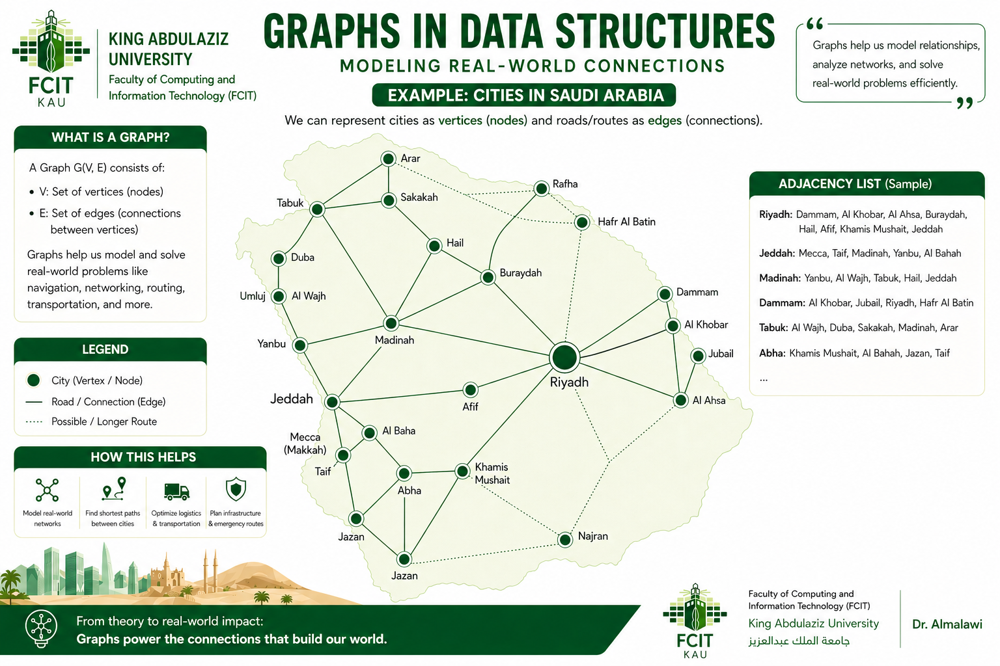

مقدمة: فكّر في الخزانة
🗄️ هياكل البيانات تشبه الخزائن
إليك طريقة مفيدة لفهم هياكل البيانات (Data Structures): فكّر في الخزانة.
خزانة الملابس فيها رفوف ومساحة للتعليق — صُمّمت للملابس.
وخزانة الملفات فيها أدراج مُعنونة — صُمّمت للمستندات.
ورفّ الكتب فيه صفوف — صُمّم للكتب.
كل خزانة مبنية لنوع محدد من التخزين. وبالطريقة نفسها،
فإن هياكل البيانات التي تعلّمتها من قبل —
المصفوفات (Arrays)، والقوائم المرتبطة (Linked Lists)، والمكدسات (Stacks)، والطوابير (Queues)، والأشجار (Trees) —
هي أنواع مختلفة من «الخزائن» لتنظيم البيانات داخل الحاسوب.
كلٌّ منها مبني لغرض محدد، وله نقاط قوته وحدوده الخاصة.
واليوم نسأل: أيّ خزانة نستخدم لتخزين خريطة؟
ونضيف إلى مجموعتنا هيكلًا جديدًا قويًا: المخطط (Graph).
تحدٍّ من الواقع: مدن المملكة العربية السعودية
ادرس هذه الخريطة بعناية — ثم اسأل نفسك: كيف سأخزّن هذه البيانات في برنامج؟

انظر إلى الخريطة أعلاه. إنها تُظهر المدن الرئيسية في المملكة العربية السعودية — الرياض، وجدة، ومكة المكرمة، والمدينة المنورة، والدمام، وتبوك، وغيرها — وكل مدينة متصلة بمدن أخرى عبر طرق، مع المسافات مُبيّنة بالكيلومترات.
🤔 أيّ هيكل بيانات ستستخدم؟
فكّر جيدًا — أيّ «خزانة» من خزائنك الحالية تناسب هذه المسألة؟
cities[0]="Riyadh"، cities[1]="Jeddah"...
ولكن كيف تُعبّر عن أن الرياض متصلة بكلٍّ من جدة والمدينة المنورة والدمام؟
المصفوفة تخزّن القيم في صفٍّ واحد فقط — وليس لديها أي مفهوم لـ«الاتصال» بين العناصر.
null).
لكل عقدة (Node) مرجع واحد فقط إلى العنصر التالي (next).
لكن الرياض متصلة بمدن كثيرة في آنٍ واحد — جدة، والمدينة المنورة، والدمام، وغيرها.
القائمة المرتبطة لا تستطيع ربط كل مدينة إلا بجارٍ واحد فقط.
وهذا ما سندرسه اليوم. المخططات من أقوى البنى وأوسعها استخدامًا في علوم الحاسب كلها — وتبدأ رحلتنا معها هنا، بخريطة المملكة العربية السعودية.
قبل أن نعرّفه تعريفًا رسميًا، تأمّل هذه الأنظمة اليومية التي تستخدمها بالفعل — كلها مخططات:
خرائط Google
المدن والمواقع متصلة بالطرق. وإيجاد أقصر طريق بين مدينتين مسألةُ مخططات تُحلّ ملايين المرات في الثانية.
الشبكات الاجتماعية
فيسبوك ولينكدإن وتويتر مخططات. الأشخاص عُقد، والصداقات والمتابعات حواف. و«أصدقاء الأصدقاء» هو اجتياز (Traversal) للمخطط.
مسارات الطيران
تربط شركات الطيران المطارات برحلات مباشرة. والتخطيط لرحلة فيها توقف (ترانزيت) هو إيجاد مسار عبر مخطط من المطارات والخطوط.
توجيه الإنترنت
الحواسيب والخوادم متصلة بكابلات وروابط لاسلكية. وكل صفحة ويب تحمّلها تنتقل عبر مخطط من أجهزة الشبكة.
جدولة المهام
في المترجمات (Compilers) وأنظمة البناء، للمهام اعتماديات — «يجب تنفيذ المهمة A قبل المهمة B». وهذا مخطط موجّه يُسمّى DAG.
ما المخطط؟ — التعريف الرسمي
يُعرَّف المخطط رياضيًا بأنه زوج مرتّب:
على سبيل المثال، مخطط فيه خمس مدن وأربعة طرق رابطة سيكون فيه V = {A, B, C, D, E} وE = {(A,B), (A,C), (B,D), (C,D), (D,E)}.
في هذا المخطط، V = {A, B, C, D, E} — خمسة رؤوس. والحواف E = {(A,B), (A,C), (B,D), (C,D), (D,E)} تصل بينها. لاحظ أن هذا المخطط بلا اتجاه (الحواف تعمل في الاتجاهين) وبلا أوزان — إنه أبسط الأنواع.
لماذا المخططات؟
قد تسأل: «ألا يمكننا تخزين بيانات المخطط في مصفوفة أو قائمة مرتبطة؟» لنفكّر بعناية فيما تستطيع المصفوفات والقوائم المرتبطة تمثيله وما لا تستطيع.
تأمّل شبكة طرق. مدينة جدة متصلة بمكة المكرمة، والمدينة المنورة، والطائف، والرياض. في القائمة المرتبطة، لا تستطيع جدة أن تشير إلا إلى مدينة واحدة. وفي المصفوفة، جدة مجرد فهرس (Index) — ولا يمكنك التعبير عن أن «جدة متصلة بمكة والطائف» دون بنية منفصلة ومعقدة.
إليك لماذا تُعدّ المخططات الأداة الصحيحة في كل مجال:
شبكات الطرق
المدن رؤوس، والطرق حواف. قد يكون للمدينة طرق كثيرة (جيران كثيرون)، ويمكن لكل حافة أن تخزّن المسافة. ولا توجد بنية خطية تستطيع تمثيل ذلك بشكل طبيعي.
الشبكات الاجتماعية
قد يكون للشخص (رأس) مئات الأصدقاء (حواف). والصداقة متبادلة — فالحافة غير موجّهة. و«الأصدقاء المشتركون» مسألة تقاطع في المخطط.
توجيه الإنترنت
تتصل الموجّهات (Routers) (رؤوس) بعدة موجّهات أخرى (حواف). وتنتقل حزم البيانات على مسارات المخطط. وتجد خوارزمية ديكسترا (Dijkstra) أسرع طريق في مخطط موزون.
أنواع المخططات
تأتي المخططات في أشكال كثيرة بحسب طبيعة حوافها ومدى اتصالها. وفهم هذه الأنواع ضروري لاختيار الخوارزمية المناسبة.
غير الموجّه مقابل الموجّه
في المخطط غير الموجّه (Undirected)، لا اتجاه للحواف — إذا اتصل A بـ B، فإن B متصل أيضًا بـ A. وفي المخطط الموجّه (Directed) (ويُسمّى digraph)، للحواف اتجاه — فالسهم من A إلى B لا يعني وجود سهم من B إلى A.
الموزون مقابل غير الموزون
في المخطط غير الموزون (Unweighted)، جميع الحواف متساوية. وفي المخطط الموزون (Weighted)، تحمل كل حافة قيمة عددية (تكلفة، مسافة، سعة). وتستخدم خرائط الطرق مخططات موزونة — فالوزن هو المسافة بين المدن.
الدوري مقابل اللادوري
يحتوي المخطط الدوري (Cyclic) على دورة واحدة على الأقل — أي مسار يبدأ وينتهي عند الرأس نفسه. أما المخطط اللادوري (Acyclic) فلا دورات فيه. الأشجار لادورية. وشبكات الطرق عادةً دورية.
المتصل مقابل غير المتصل
في المخطط المتصل (Connected) يوجد مسار بين كل زوج من الرؤوس. أما المخطط غير المتصل (Disconnected) ففيه رأسان على الأقل لا يوجد بينهما مسار — أي أنه يحتوي على عدة مكوّنات متصلة.
DAG — المخطط الموجّه اللادوري (Directed Acyclic Graph)
الـ DAG مخطط موجّه بلا دورات. وهو أساسي في جدولة المهام، والمترجمات (حلّ الاعتماديات)، وجداول البيانات، ومديري الحزم. والفرز الطوبولوجي (Topological Sort) — أي ترتيب المهام بحسب اعتمادياتها — لا يعمل إلا على مخططات DAG.
المصطلحات
قبل دراسة خوارزميات المخططات، يجب أن تكون متمكّنًا من مفرداتها. فكل مصطلح أدناه يتكرر كثيرًا في وصف الخوارزميات.
-
الرأس / العقدة (Vertex / Node)الوحدة الأساسية في المخطط. يمثّل كيانًا: مدينة، أو شخصًا، أو حاسوبًا، أو مهمة. ويُرمز لمجموعة كل الرؤوس بـ V.مثال: في خريطة الرحلات الجوية، كل مطار رأس.
-
الحافة (Edge)اتصال بين رأسين. تمثّل علاقة أو رابطًا. ويُرمز لمجموعة كل الحواف بـ E. ويمكن أن تكون الحافة موجّهة (باتجاه واحد) أو غير موجّهة (باتجاهين).مثال: الرحلة المباشرة بين مطارين حافة.
-
الدرجة (Degree)درجة الرأس هي عدد الحواف المتصلة به. وفي المخططات الموجّهة: درجة الدخول (in-degree) = الحواف الداخلة، ودرجة الخروج (out-degree) = الحواف الخارجة.مثال: إذا كانت المدينة D متصلة بـ B وC وE — فدرجتها 3.
-
المسار (Path)المسار تسلسل من الرؤوس بحيث يتصل كل زوج متتالٍ منها بحافة. والمسار البسيط (Simple Path) لا يزور أي رأس أكثر من مرة.مثال: A → B → D → E مسار طوله 3 (ثلاث حواف).
-
الدورة (Cycle)الدورة مسار يبدأ وينتهي عند الرأس نفسه، مارًّا برأس آخر واحد على الأقل. واكتشاف الدورات أمر حاسم في كشف حالات الجمود (Deadlock) وحلّ الاعتماديات.مثال: A → B → D → C → A دورة.
-
متجاوران (Adjacent)يكون الرأسان متجاورين (أو جارين (Neighbors)) إذا وُجدت حافة تصل بينهما مباشرة. وفي المخطط الموجّه، التجاور له اتجاه: إذا وُجدت الحافة (u,v)، فإن v مجاور لـ u، وليس بالضرورة أن يكون u مجاورًا لـ v.مثال: A وB متجاوران لأن الحافة (A,B) موجودة.
-
المكوّن المتصل (Connected Component)المكوّن المتصل أكبر مجموعة جزئية من الرؤوس بحيث يمكن الوصول إلى كل رأس فيها من أي رأس آخر فيها. والمخطط المتصل له مكوّن واحد بالضبط.مثال: قد يكون لمخطط غير متصل فيه 6 رؤوس مكوّنان: {A,B,C} و{D,E,F}.
مصفوفة الجوار
مصفوفة الجوار (Adjacency Matrix) إحدى الطريقتين الرئيسيتين لتمثيل المخطط في الذاكرة. وهي تستخدم مصفوفة ثنائية الأبعاد (2D array) حجمها V × V، حيث V عدد الرؤوس.
matrix[i][j] = 1 إذا وُجدت حافة من الرأس i إلى الرأس j، وإلا فإن matrix[i][j] = 0.
وفي المخططات غير الموجّهة تكون المصفوفة متماثلة: matrix[i][j] = matrix[j][i].
لنأخذ المخطط نفسه ذا العقد الخمس من القسم 2: الحواف (A,B), (A,C), (B,D), (C,D), (D,E).
| A | B | C | D | E | |
|---|---|---|---|---|---|
| A | 0 | 1 | 1 | 0 | 0 |
| B | 1 | 0 | 0 | 1 | 0 |
| C | 1 | 0 | 0 | 1 | 0 |
| D | 0 | 1 | 1 | 0 | 1 |
| E | 0 | 0 | 0 | 1 | 0 |
تشير الآحاد الزرقاء إلى المواضع التي توجد فيها حافة. لاحظ أن المصفوفة متماثلة حول القطر — وذلك لأن المخطط غير موجّه. والقطر كله أصفار لأن الرأس ليس له حافة إلى نفسه.
قائمة الجوار
تمثّل قائمة الجوار (Adjacency List) المخطط بأن تخزّن لكل رأس قائمةً بجيرانه. فبدلًا من مصفوفة كاملة بحجم V×V، نخزّن فقط الحواف الموجودة فعلًا.
للمخطط نفسه — الحواف (A,B), (A,C), (B,D), (C,D), (D,E):
A --> [ B, C ]
B --> [ A, D ]
C --> [ A, D ]
D --> [ B, C, E ]
E --> [ D ]
كل مفتاح رأس، وكل قيمة هي قائمة جيرانه المباشرين. للرأس D ثلاثة جيران (B، C، E) لذا تحتوي قائمته على ثلاثة مُدخلات. وللرأس E جار واحد فقط (D)، لذا تحتوي قائمته على مُدخل واحد.
مصفوفة الجوار مقابل قائمة الجوار
يؤثّر اختيار التمثيل المناسب في أداء كل خوارزمية مخططات تنفّذها. وإليك مقارنة مباشرة:
| الخاصية | مصفوفة الجوار | قائمة الجوار |
|---|---|---|
| التعقيد المكاني | O(V²) — تحجز دائمًا V×V خانة | O(V + E) — تخزّن الحواف الموجودة فقط |
| التحقق من الحافة (u, v) | O(1) — وصول مباشر إلى المصفوفة | O(degree(u)) — يجب المرور على قائمة الجيران |
| إضافة حافة | O(1) — تعيين خانتين إلى 1 | O(1) — إلحاق بقائمة الجوار |
| حذف حافة | O(1) — تعيين خانتين إلى 0 | O(degree(u)) — البحث في القائمة ثم الحذف منها |
| المرور على جميع جيران u | O(V) — يجب المرور على الصف كاملًا، حتى الأصفار | O(degree(u)) — يزور الجيران الحقيقيين فقط |
| الأنسب لـ | المخططات الكثيفة (E قريب من V²)، أو عند الحاجة إلى التحقق المتكرر من وجود الحواف | المخططات المتناثرة (E أقل بكثير من V²)، وهي معظم المخططات في العالم الحقيقي |
| الذاكرة عند V=1000 | 1,000,000 خانة (حتى لو لم يوجد إلا 2,000 حافة) | قرابة 4,000 مُدخل (2 × E لمخطط غير موجّه فيه 2000 حافة) |